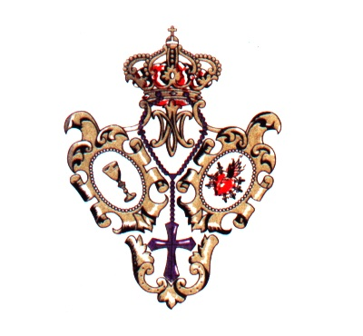
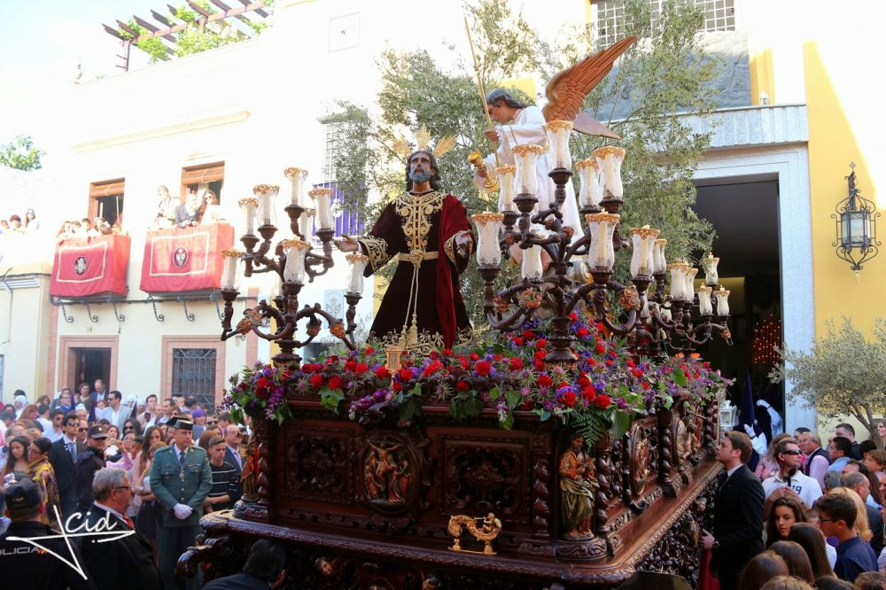

Oración en el Huerto
Parroquía Santa María Magdalena Salida desde C/ Aníbal González, 10
Antigua Hermandad de María Santísima del Rosario y Cofradía de Nazarenos de la Sagrada Oración de Nuestro Señor Jesucristo en el Huerto y Nuestra Madre y Señora de los Dolores

Numero de hermanos
1400
Nazarenos
500
Autores
Nuestro Padre Jesús Orando en el Huerto es obra de Manuel Pineda Calderón (1948) y restaurado por Álvarez Duarte (2004). Pineda Calderón realizo también las Imágenes del Ángel (1940), San Pedro, San Juan y Santiago (1954). Nuestra Madre y Señora de los Dolores es obra de Manuel Pineda Calderón (1941), partiendo de la Imagen antigua de la Hermandad desde 1893, restaurada por Álvarez Duarte (2006).
Capataces
Fernando Gutiérrez Luna en el Paso de Misterio y José Carlos Gómez Cabrera en el Palio.
Música
A.M. Ntra. Sra. de Valme en el Misterio y B.M. Ciudad de Dos Hermanas en el Palio.
RECORRIDO
| Hora Aprox. | Cruz de guía |
|---|---|
| 19:00 | Salida |
| -- | Aníbal González |
| 19:30 | Lope de Vega |
| -- | Melliza |
| -- | Cervantes |
| 20:00 | Canónigo |
| -- | Santa María Magdalena |
| -- | Plaza de la Constitución |
| 20:30 | Carrera Oficial |
| -- | Santa Ana |
| 21:00 | Real Utrera |
| -- | Álvarez Quintero |
| -- | Plaza de Hidalgo Carret |
| 21:30 | Churruca |
| -- | San Sebastián |
| 22:00 | Plaza del Emigrante |
| -- | Plaza de la Mina |
| -- | San Francisco |
| -- | Antonia Díaz |
| 23:00 | Francesa |
| -- | Santa Cruz |
| -- | Plaza de Menéndez Pelayo |
| -- | Santa María Magdalena |
| -- | Aníbal González |
| 00:00 | Entrada |